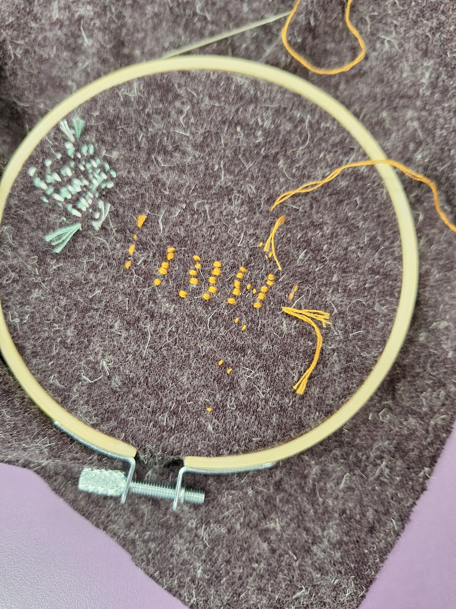
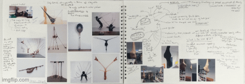

I am a design engineer. I am based in London, where I am currently engaged on a renewable energy project, which aims to decarbonise a local site through the introduction of heat pumps. For this project I use excel for conducting 'back of the envelope' calculations.
- I am drawing portraits in A1. The scale of the paper is larger than the drawings, I could work at A2 scale and fill the page. It has also led me to think of drawing portraits of my family members. I am enjoying hand-sewing although I have not developed the technique for invisible darning. The act of knit, stitch and clay-work is providing meaning in my life. (Mar 2026)
- I was most recently taking classes in portraiture, life drawing and sewing. These classes enabled me to maintain and improve on existing skills. (Apr 2025)
Media



Relevant links
https://2020.deshowcase.london/placements/sector/industrial-manufacturing/iris-van-herpen
https://www.creativeboom.com/inspiration/ual/
https://www.creativeboom.com/inspiration/ual/
Contact
I am able to provide a CV and portfolio upon request.